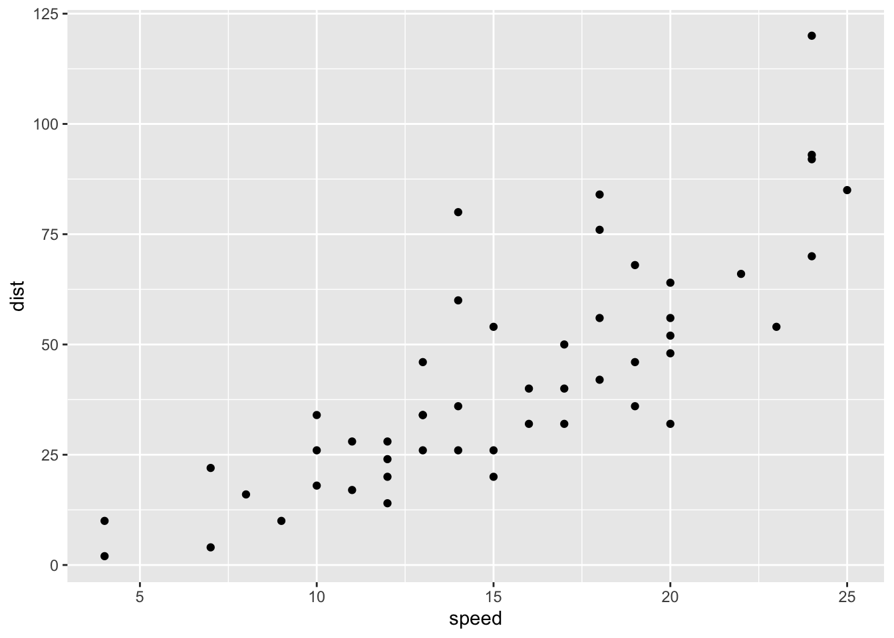

3 Methods and data
3.1 Subsection title
Write one sentence per line. Leave one blank line to separate paragraphs. Write one sentence per line. Leave one blank line to separate paragraphs. Write one sentence per line. Leave one blank line to separate paragraphs.
Consider a variable, \(y_{it}\), that can be decomposed as follows:
\[\begin{equation} y_{it}=g_{it}+a_{it} \end{equation}\] where \(g_{it}\) is a systematic component and \(a_{it}\) is a transitory component. To further separate common from idiosyncratic components, we could apply
\[y_{it}=\left(\frac{g_{it}+a_{it}}{\mu_{t}}\right)\mu_{t}=\delta_{it}\mu_{t}\] where \(\delta_{it}\) is an idiosyncratic component and \(\mu_{t}\) is a common component.
Write one sentence per line. Leave one blank line to separate paragraphs. Write one sentence per line. Leave one blank line to separate paragraphs. Write one sentence per line. Leave one blank line to separate paragraphs.
Write one sentence per line. Leave one blank line to separate paragraphs. Write one sentence per line. Leave one blank line to separate paragraphs. Write one sentence per line. Leave one blank line to separate paragraphs.
You can cite in this way(Shea et al. 2014; Lottridge et al. 2012). Or this other way. Shea et al. (2014) and Lottridge et al. (2012) found that …
Write one sentence per line. Leave one blank line to separate paragraphs. Write one sentence per line. Leave one blank line to separate paragraphs. Write one sentence per line. Leave one blank line to separate paragraphs.
here’s a plot created in R

Figure 3.1: Title of the figure
Write one sentence per line. Leave one blank line to separate paragraphs. Write one sentence per line. Leave one blank line to separate paragraphs. Write one sentence per line. Leave one blank line to separate paragraphs.
Write one sentence per line. Leave one blank line to separate paragraphs. Write one sentence per line. Leave one blank line to separate paragraphs. Write one sentence per line. Leave one blank line to separate paragraphs.
3.2 Section title
Write one sentence per line. Leave one blank line to separate paragraphs. Write one sentence per line. Leave one blank line to separate paragraphs. Write one sentence per line. Leave one blank line to separate paragraphs.
Write one sentence per line. Leave one blank line to separate paragraphs. Write one sentence per line. Leave one blank line to separate paragraphs. Write one sentence per line. Leave one blank line to separate paragraphs
A nice table
| speed | dist |
|---|---|
| 4 | 2 |
| 4 | 10 |
| 7 | 4 |
| 7 | 22 |
| 8 | 16 |
3.3 Section title
References
Lottridge, Danielle, Eli Marschner, Ellen Wang, Maria Romanovsky, and Clifford Nass. 2012. “Browser design impacts multitasking.” In Proceedings of the Human Factors and Ergonomics Society 56th Annual Meeting. https://doi.org/10.1177/1071181312561289.
Shea, Nicholas, Annika Boldt, Dan Bang, Nick Yeung, Cecilia Heyes, and Chris D Frith. 2014. “Supra-personal cognitive control and metacognition.” Trends in Cognitive Sciences 18 (4): 186–93. https://doi.org/10.1016/j.tics.2014.01.006.